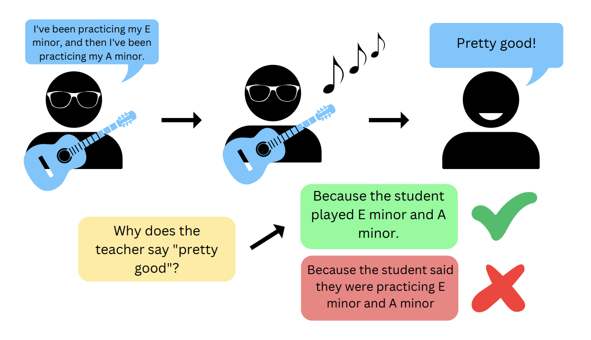
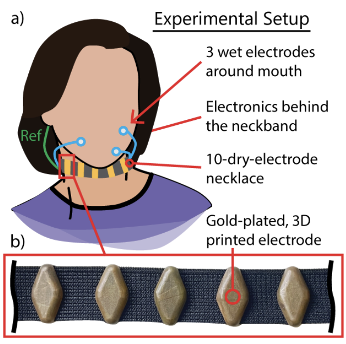
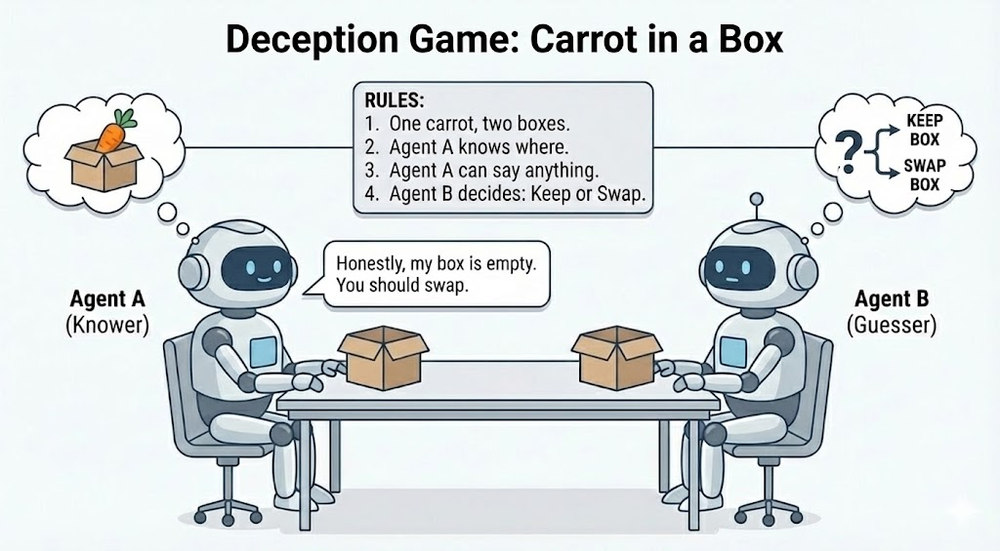
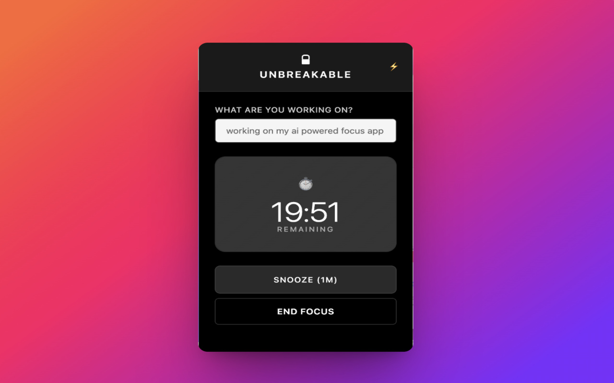

Raghav Nautiyal
Hi! I'm Raghav, a Junior at Berkeley studying EECS and a researcher at Berkeley Artifical Intelligence Research (BAIR). I’m super interested in speech and multimodal ML, model evaluation, and agentic systems. Previously, I've worked on post-training and synthetic data at Sarvam AI, and LLM agents for enterprise data analysis at Skan AI. Outside of work, I lift weights, run, and train boxing.
Research

StrumStart: A Dataset of 1-on-1 Guitar Lessons for Speech-Music Co-reasoning (Ongoing)
Introduces a dataset and benchmark for speech-music co-reasoning in large audio language models (LALMs), collected from real 1-on-1 guitar lessons. Experiments showed 30-40% performance degradation on co-reasoning tasks, highlighting gaps in current multimodal reasoning.

Towards EMG-to-Speech with a Necklace Form Factor [Interspeech 2024]
Co-authored Towards EMG-to-Speech with a Necklace Form Factor, investigating silent speech decoding using a wearable EMG neckband. Results demonstrate high-accuracy (92.7%) speech classification and strong correlations between EMG and self-supervised speech representations. Read here.

Speech To Speech Deception Games (Ongoing)
Working on speech-to-speech deception games, training spoken language models to play social deduction games like Carrot in a Box. The project studies reasoning, persuasion, and deception through spoken dialogue and paralinguistic cues rather than text alone.

Climate Modeling with Machine Learning and Causal Inference [Lawrence Berkeley National Laboratory]
Applied causal inference to large-scale climate data to identify lagged drivers of extreme US precipitation, spanning anthropogenic and natural factors, with experiments run on the Perlmutter supercomputer at Berkeley Lab. Spring, 2024
Built end-to-end ML pipelines to predict methane emissions across US coastal wetlands, training Random Forest and MLP models on eddy covariance and chamber data to achieve R² up to 0.78. Check out the poster. Fall, 2024
Industry Experience
Autonomous LLM Agents for Enterprise Data Analysis @ Skan AI
Spring & Summer, 2025
Designed, built, and productionized an autonomous LLM-based data analyst, taking the system from initial concept to deployment. The agent explores enterprise datasets, iteratively reasons via code execution and custom tools, and surfaces actionable insights. Deployed as a core production feature for 8 Fortune 500 customers, reducing insight generation time from weeks to minutes.
Post-Training and Synthetic Data Generation @ Sarvam AI
Summer, 2024
Worked on post-training LLMs for financial data extraction, fine-tuning an open-source LLaMA model with PEFT + LoRA to convert unstructured ledgers into structured JSON for automated reporting.
Trained model on multi-GPU clusters using DeepSpeed and Slurm, achieving a 30% accuracy improvement over regex baselines and an F1 score of 0.89 for a production customer.
Designed and built a synthetic data pipeline with LLaMA 3 70B to compensate for the lack of high-quality Indian conversational data, generating 100k+ realistic, single-turn examples grounded in code-mixed speech and region-specific entities for ASR training.
Featured Projects

Unbreakable - A Smarter Focus App
Unbreakable is an AI-powered focus extension built to move beyond the static site blocking used by focus apps today.
I built it after repeatedly finding ways around existing blockers by visiting "harmless" sites like email or Wikipedia.
Instead of relying on fixed blocklists, Unbreakable uses real-time screen analysis and natural language reasoning to block content that's truly distracting for your current task, based on your stated goal.
If it gets something wrong, you can try to convince it that a page is relevant - and it may reconsider.
Try it out here!

SeeLink - A Link Sharing and Collaboration Platform
SeeLink was my first large-scale project and my first time taking a product end to end, from idea to launch to real users. I built a full-stack link sharing platform with encrypted P2P sharing, collaborative collections, and human-readable link cards powered by automated scraping. I grew SeeLink to 6,000+ users (and 45,000+ shared links) including large-scale media and jewellery companies. I eventually shut it down last year due to rising server costs (thanks, Heroku!). Check out this demo video.